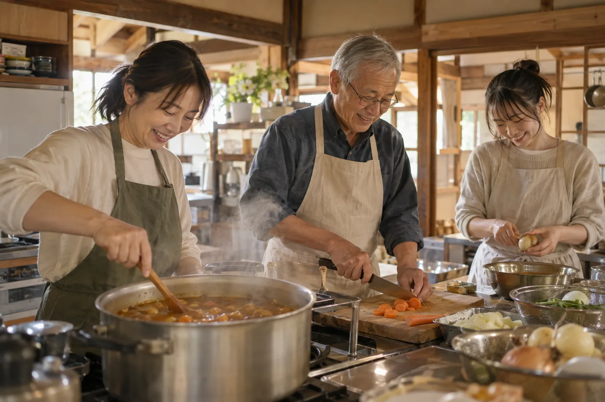
01こども食堂
あったかいごはんを、みんなで囲む
毎週水曜と土曜の夕方、地域の農家さんや商店からいただいた食材で、ボランティアが手づくりの夕ごはんを用意します。献立は栄養士のボランティアと相談して決め、アレルギーにも個別に対応しています。
- 日時
- 毎週 水・土 17:30〜19:00
- 参加費
- 子ども 無料／大人 300円
- 対象
- 小学生〜高校生と、その保護者
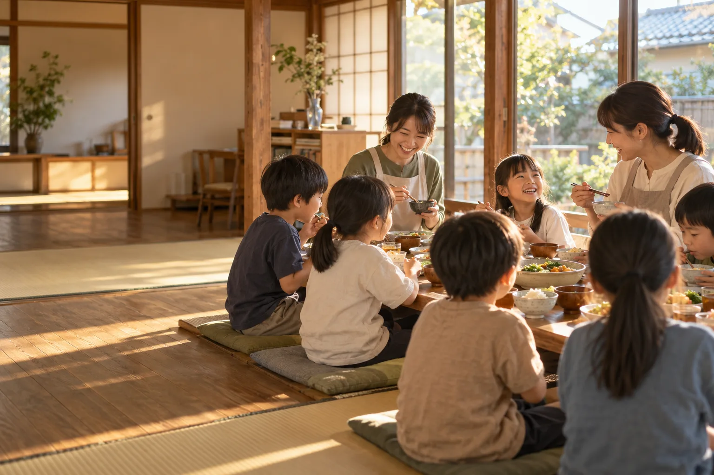
名古屋市〇〇区の古い一軒家で、子ども食堂と無料の学習支援をひらいています。おなかいっぱい食べて、宿題をして、ちょっと話して帰る。そんな当たり前の夕方を、近所のみんなで支えています。
のこども食堂は「さつまいもご飯と豚汁」。予約はいりません。小学生〜高校生と保護者の方、どなたでもどうぞ。
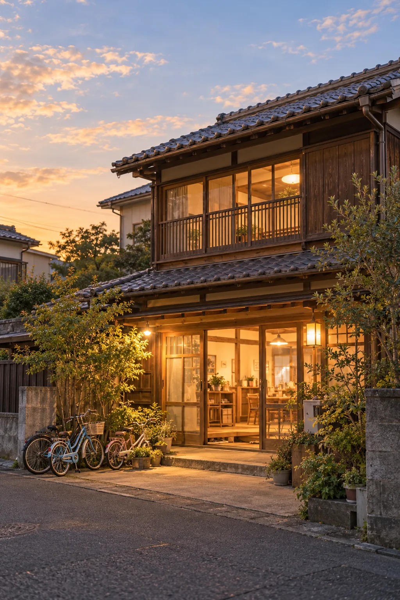
About us
ひだまり舎は、2016年に近所の保護者と元小学校教員の数人で始めた、小さな子ども食堂から生まれました。最初は公民館の調理室を借りて月に1回。「毎週あったらいいのに」という子どもの一言に背中を押され、2019年に空き家を借りて拠点を構えました。
ここに来る理由は、人それぞれです。親の帰りが遅い子、きょうだいが多くて宿題に集中できない子、ただ友だちと一緒にいたい子。理由を聞かず、誰でも来られることを大切にしています。
Activities
食べること、学ぶこと、暮らしを支えること。どれか一つではなく、三つが重なる場所であることを大切にしています。

01こども食堂
毎週水曜と土曜の夕方、地域の農家さんや商店からいただいた食材で、ボランティアが手づくりの夕ごはんを用意します。献立は栄養士のボランティアと相談して決め、アレルギーにも個別に対応しています。
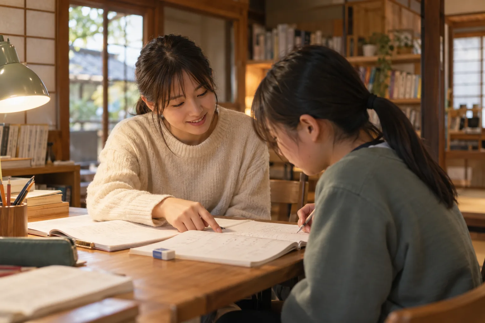
02まなびの部屋
大学生や元教員のボランティアが、宿題や定期テストの勉強をマンツーマンに近い形でサポートします。勉強が苦手な子も、まずは「ここに来ること」から。高校受験を控えた中学3年生には、面接練習や志望校選びの相談も行っています。
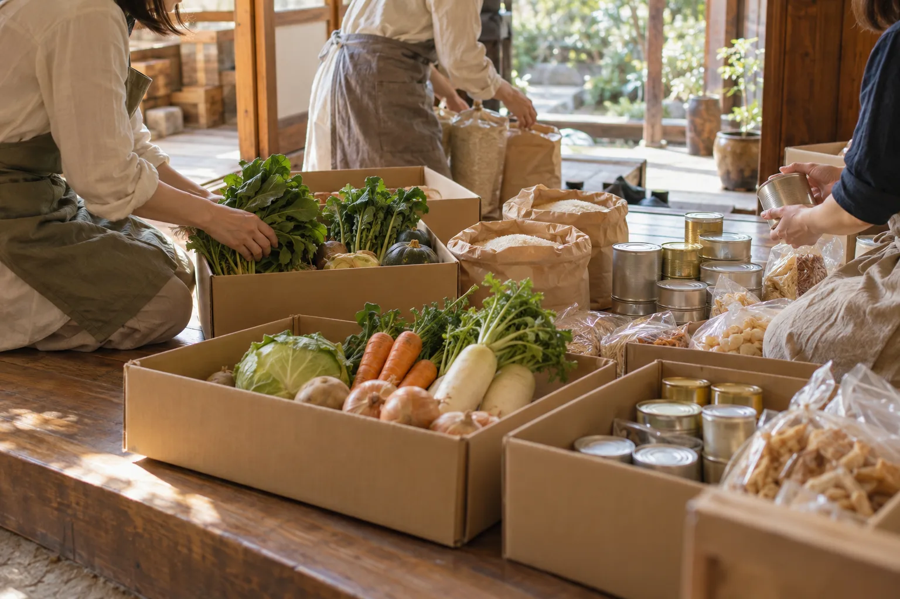
03おすそわけ便
企業や家庭から寄せられた食品・日用品を、月に2回、子育て家庭にお渡ししています（フードパントリー）。受け取りに来にくいご家庭には、ボランティアがお届けすることも。お渡しのときの何気ない会話が、困りごとの相談につながることもあります。
One day
学校が終わると、ランドセルの音が玄関に集まってきます。ごはんの前に宿題、ごはんの後は少しだけ遊んで、暗くなる前に帰る。決まりは少しだけです。
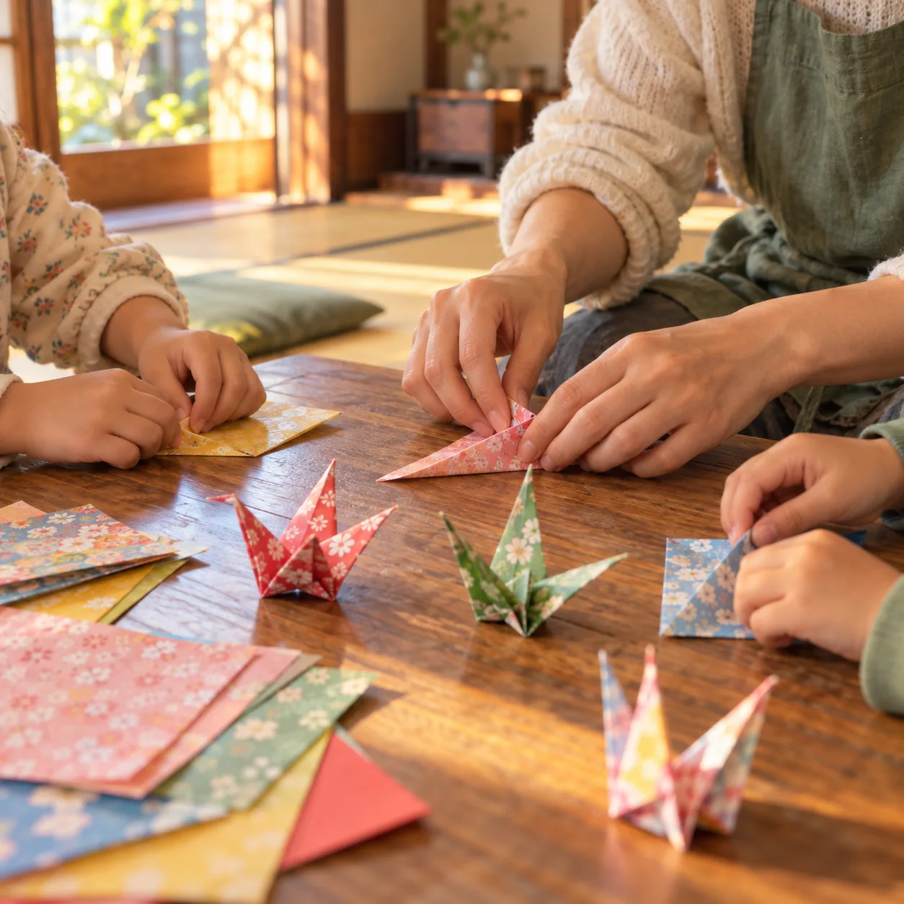
来た子から名前を書いて、まずはおやつと麦茶。今日あったことを聞くのが、ボランティアの最初の仕事です。
座敷の長机で宿題を広げます。わからないところは、近くの大人や上の学年の子が一緒に考えます。
折り紙やボードゲーム、庭でのなわとび。配膳を手伝ってくれる子には「ありがとう」をたくさん伝えます。
みんなで手を合わせて夕ごはん。おかわりは何回でも。苦手な野菜に挑戦した子は、ちょっと誇らしげです。
低学年の子は保護者のお迎えか、ボランティアが家の近くまで一緒に歩いて見送ります。
2025年度の活動
※掲載の数値・声はポートフォリオ用の架空データです。
Support us
ひだまり舎の活動は、行政の助成金と、個人・企業の皆さまからのご寄付で続いています。食材費、家賃、光熱費、教材費、ボランティア保険。使いみちは毎年の活動計算書で公開しています。
いちばん支えになります
月 1,000 円から
毎月決まった額を継続してご寄付いただく方法です。先の予定が立てられるので、献立や学習支援の計画をしっかり組むことができます。
いま 138 人のサポーターが、毎週の献立を支えてくださっています。
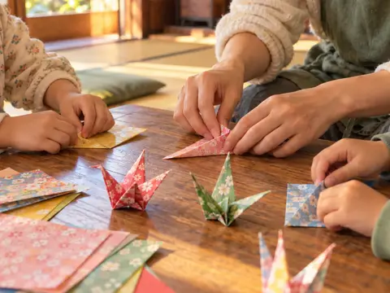
クレジットカード・口座振替に対応（デモサイトのため受付はしていません）
3,000 円から
ご都合のよいときに、一度だけご寄付いただけます。お誕生日や記念日の寄付も歓迎です。
お米・野菜・文房具など
賞味期限が1か月以上あるもの、未開封のものを受け付けています。お持ち込みの前にご連絡ください。
いま特に足りないもの（10月）
※サポーター数・金額の内訳は目安として試算した、ポートフォリオ用の架空データです。
当法人は認定NPO法人ではないため、ご寄付は寄付金控除の対象外となります。法人の認証は名古屋市より受けています（番号は架空サイトのため省略）。
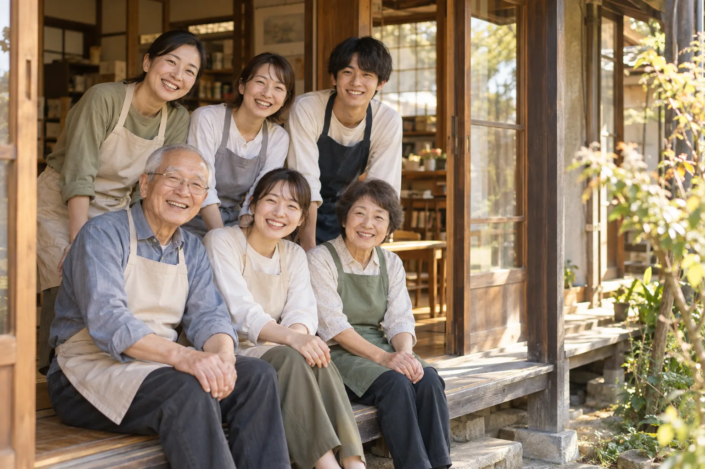
Join us
大学生から70代まで、64名のボランティアが関わっています。特別な資格はいりません。「子どもと一緒にごはんを食べる」ことも、立派なボランティアです。
食堂の日に、夕ごはんづくりと配膳、片付けを担当します。料理が得意でなくても大丈夫です。
水・土 15:00〜19:30宿題やテスト勉強に付き添います。教えるより、隣で一緒に考えることを大切にしています。
月・木 16:00〜19:00寄贈品の仕分けや、ご家庭へのお渡し・お届けを行います。車をお持ちの方は特に歓迎です。
第2・第4 日曜 9:30〜12:30おたよりの作成、写真の整理、会計の補助など。在宅でできる作業もあります。
ご都合にあわせて大学の授業の合間に通っています。最初は緊張しましたが、「先生、また来週ね」と言われると、こちらが元気をもらっています。
定年後、何か地域の役に立ちたいと思って。若いお母さんたちと台所に立つのが、今ではいちばんの楽しみです。
※掲載の数値・声はポートフォリオ用の架空データです。
Reports
日々の活動の様子と、毎年の事業報告・会計報告を公開しています。いただいたご寄付の使いみちを、できるだけわかりやすくお伝えします。
2025年度 事業報告書・活動計算書
PDF／全16ページ
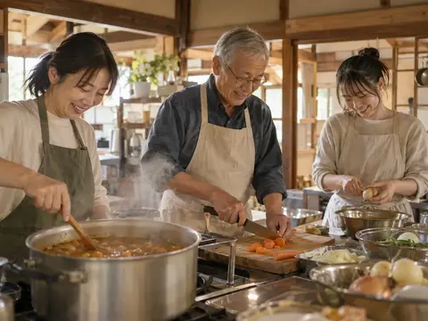
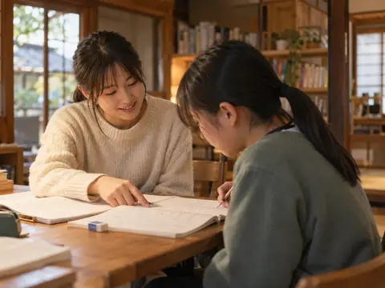
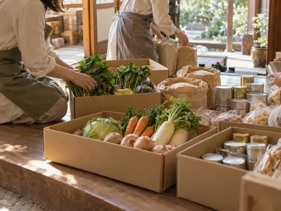
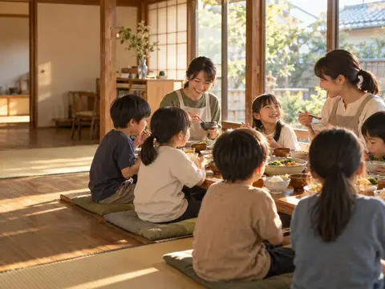
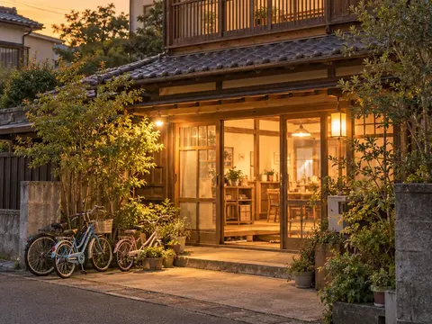
Q&A
よくいただく質問をまとめました。ここにないことは、お気軽にお問い合わせください。
こども食堂とまなびの部屋は、条件なしでどなたでも利用できます。初めての日に、お名前と緊急連絡先だけ書いていただいています。
はい、大丈夫です。小学1〜3年生のお子さんは、初回だけ保護者の方と一緒に来ていただくか、お電話でご連絡をお願いしています。
できます。事前にアレルギーの内容をお知らせいただければ、除去食や代わりのおかずを用意します。対応が難しい場合は、ご相談のうえで決めさせてください。
毎年7月に、前年度の事業報告書と活動計算書をこのページで公開しています。寄付者の皆さまには、年4回のおたよりでも活動の様子をお伝えしています。
ボランティアを検討中の方、寄付をご検討中の方の見学を歓迎しています。子どもたちのプライバシーを守るため、事前にご連絡をお願いします。
Contact
ボランティアのご応募、寄付のご相談、ご利用についてなど、お気軽にお問い合わせください。3日以内にスタッフからお返事します。